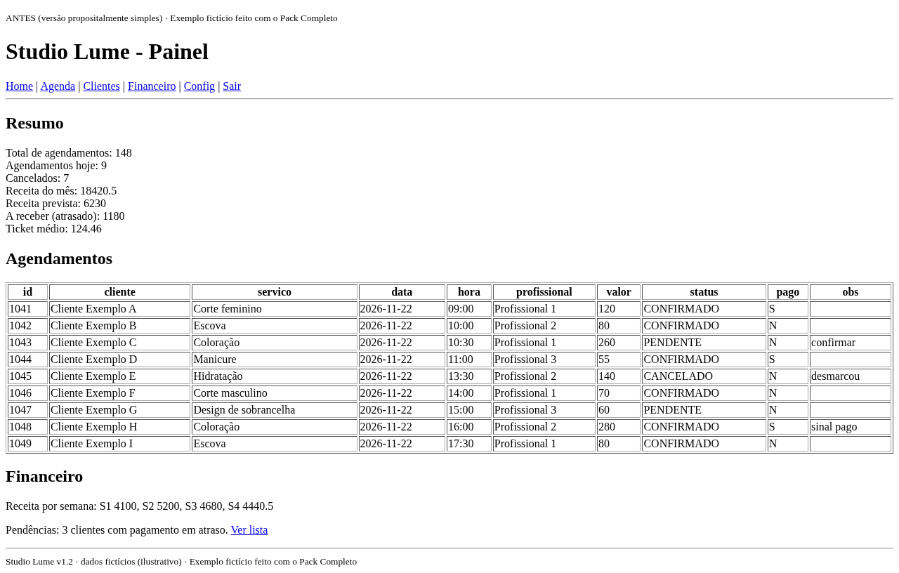
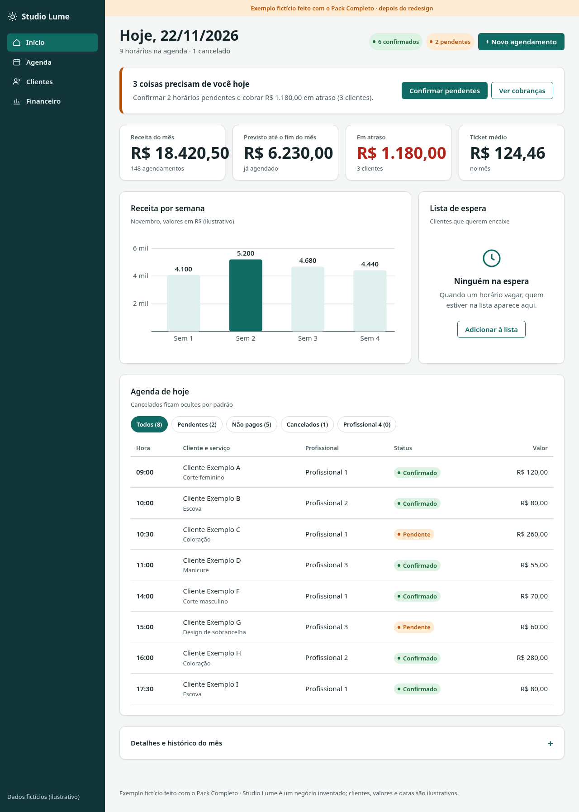
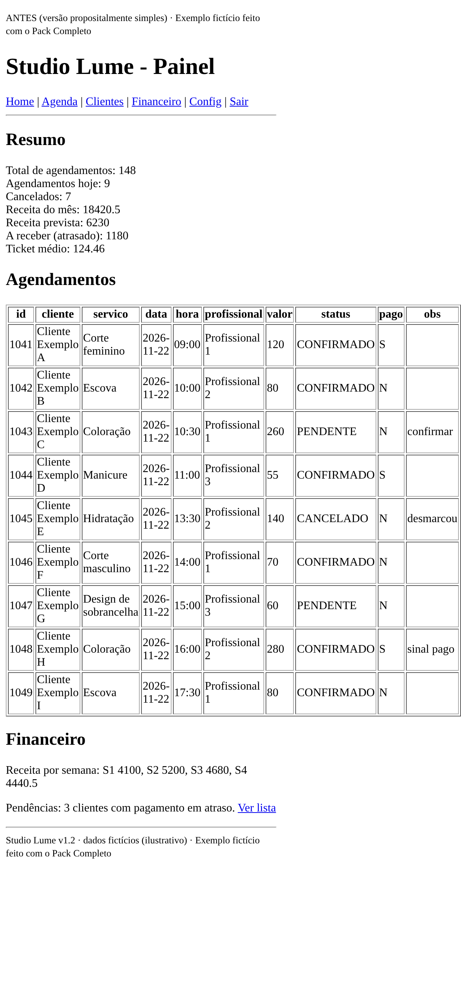
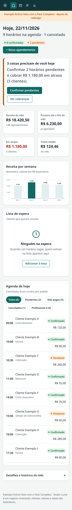

Antes e depois: redesign do painel do Studio Lume
Um painel de agendamentos e financeiro de um estúdio fictício, refeito para responder primeiro à pergunta “o que eu preciso decidir hoje?”. Todos os dados são inventados e ilustrativos.
Desktop (1280px)


Mobile (390px)


O que mudou e por quê
| Mudança | Por quê (princípio da skill app-ui-redesign) |
|---|---|
| Cartão “3 coisas precisam de você hoje” no topo, com botões de ação. | Diagnóstico: foco em decisão, não em log. O antes listava 7 números sem prioridade; agora o que exige ação (pendentes e atrasos) vem primeiro. |
| Estado global no cabeçalho: data, 6 confirmados, 2 pendentes, “Novo agendamento”. | Estado global no cabeçalho, não dentro de painéis. Contagens e ação principal ficam visíveis em qualquer rolagem. |
| 4 KPIs em cartões, valores em R$ com tamanho grande; “Em atraso” em vermelho. | Hierarquia: o número é o protagonista, o rótulo é secundário. Cor só onde há significado (atraso). |
| Gráfico de barras em SVG com a semana mais forte destacada e valores nas barras. | Conteúdo nativo: o antes tinha “S1 4100, S2 5200…” em texto; o gráfico mostra a comparação sem exigir leitura. |
| Tabela enxuta: de 10 colunas para 5; cliente e serviço agrupados, status em selo com texto e cor, valores em R$ alinhados à direita. | Densidade e status legíveis. Colunas de baixo valor (id, data repetida, “pago S/N”) saíram da visão principal. No mobile, vira lista de cartões. |
| “Detalhes e histórico do mês” recolhível; cancelados ocultos por padrão com filtro. | Informação secundária em gaveta recolhível. |
| Estados vazios (lista de espera; filtro sem resultados) com explicação e ação. | Evita telas mortas; diz o que fazer em seguida. (Clique em “Profissional 4 (0)” em after.html para ver.) |
| tokens.css com cores, tipografia, espaços, raios, sombras e movimento; vitrine. | design-system-tokens: nenhum hex solto nos componentes; trocar a marca é editar um arquivo. Subtítulo ≥ 20px no mobile, pesos ≥ 400/600. |